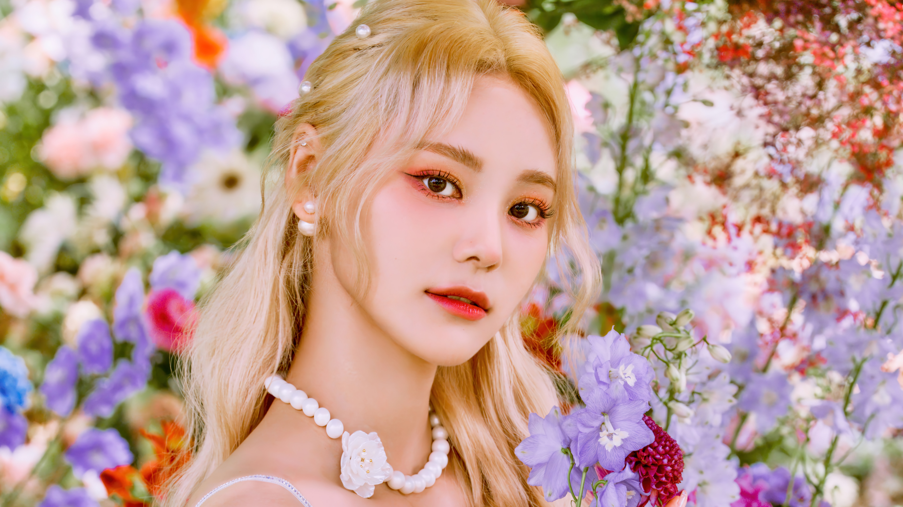

O Peixe que Teletransporta 
NOME:
Jung Jin Sol (정진솔)
DATA DE NASCIMENTO:
13 de junho de 1997
COR:
Azul
ANIMAL:
Peixe Beta Azul
PODER:
Teletransporte
SUB-UNIT:
DATA DE DEBUT:
13 de maio de 2017
----------------------------------------------------
CLIPES:
----------------------------------------------------
Álbuns
Tracklist:
Singing in the Rain
Love Letter (Feat.Kim Lip)
Singing in the Rain (Feat.HeeJin) (Unreleased)
-Meow The Secret Boy (Soundtrack Pt.8)-
Tracklist:
As Time Goes
As Time Goes (Instrumental)